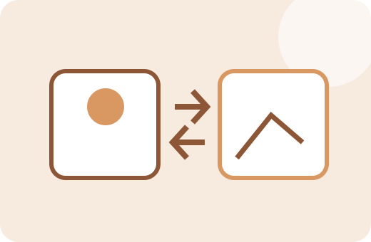

FACTORY ONE · IMAGE TOOL
이미지 포맷 변환
이미지를 JPG·PNG·WebP 등 다른 형식으로 변환합니다. 업로드 사이트나 편집 프로그램이 특정 형식을 요구할 때 빠르게 바꿀 수 있습니다.
JPG·PNG·WebP미리보기브라우저 처리

원본
이미지를 선택하세요.
변환 결과
변환 결과가 표시됩니다.
이미지 선택
사용방법
- 변환할 이미지를 선택합니다.
- 지원되는 출력 형식을 선택합니다.
- 변환 결과를 미리 확인합니다.
- 필요한 형식으로 저장합니다.
처리 기준과 주의사항
브라우저가 디코딩한 이미지를 캔버스에 다시 그린 뒤 선택한 MIME 형식으로 인코딩합니다. 브라우저가 지원하지 않는 형식은 출력할 수 없습니다.
중요한 원본 파일은 별도로 보관하고, 결과 파일은 저장 후 한 번 열어 내용과 품질을 확인하는 것을 권장합니다.
실제 사용 예시
WebP 이미지를 JPG만 허용하는 제출 사이트에 올려야 할 때 JPG로 변환해 사용할 수 있습니다.
자주 묻는 질문
HEIC도 되나요?
브라우저 기본 디코딩 지원 여부에 따라 달라집니다. 별도 HEIC 라이브러리가 없는 경우 지원되지 않을 수 있습니다.
PNG 투명 배경은 JPG에서도 유지되나요?
JPG는 투명도를 지원하지 않으므로 배경 처리 결과를 확인해야 합니다.